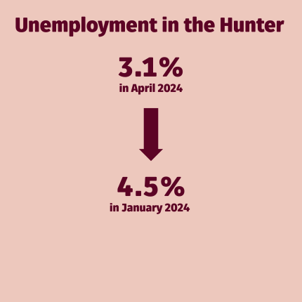

HUNTER INSIGHT DASHBOARD
Economic Update - July 2024
The University of Newcastle’s Institute for Regional Futures’ Insight Dashboard tracks socio-economic conditions in the Hunter. The dashboard is based on the Hunter Research Foundation Centre’s databank collected over 60 years, the most comprehensive collection for any region in Australia.
This dashboard of economic updates is designed to give decision-makers in government, industry and the community the latest data on the Hunter’s performance across key indicators. The dashboard draws upon national and regional data sources to deliver insights about the Hunter region. These updates will be provided throughout the year, in addition to the Hunter Insight Series. This release is the third in this format.
The dashboard is a snapshot of just some of the total data collected by the Institute for Regional Futures. For more information please contact irf@newcastle.edu.au.


International and national conditions
- National: Economic growth, measured through Gross Domestic Product, saw a quarterly increase of 0.1%, capping off a 1.1% increase over the last 12 months.
- International: A 5.1% increase in imports outweighed a 0.7% rise in exports, leading to a decline in net trade of -0.9% for the last quarter.
- National: Consumer Price Index (CPI) slowed to a quarterly increase of +1.0%, resulting in a 12 month CPI of +3.6%. Rents and education were the most significant drivers of CPI growth. Business conditions have fallen to just below the long run average. Business confidence fell into negative territory, with sharp falls in manufacturing and a range of services.
Hunter conditions
- Hunter labour market (employment): Employment in the Hunter region rebounded from a trough of 246,000 jobs in February 2024, with 9,700 jobs added since (to April 2024). Latest 3-monthly data shows growth in employment in health services and manufacturing, with declines in mining, retail trade, public administration and education.
- Hunter labour market (unemployment): The unemployment rate is still low, with a rate of 3.1% in April 2024, down from 4.5% at the start of the year. The Hunter unemployment rate is below NSW averages, with even lower unemployment rates in Newcastle and Lake Macquarie.
- Hunter housing market: Prices in the Hunter are mixed, with price rises of 0.26% on a median basis in the Greater Newcastle area in the first quarter of 2024, for a 2.9% increase over the preceding year. In the six months to March 2024, there were mixed results at the Local Government Areas (LGAs) with both increases and declines across the region. Rental prices are continuing their upward trajectory for most Hunter LGAs.
Contents
National economy
Trends: National economic growth has slowed, showing a 1.1% growth per annum for the last year. On a per capita basis, this equates to a decline of 1.3% per annum.
Latest: The latest data points show a 0.1% growth for the first quarter of 2024, down from a 0.3% growth for the last quarter of 2023.
Data source: Data source: ABS Australian National Accounts: National Income, Expenditure and Product.
At the national level, Australian Bureau of Statistics (ABS) data shows a quarterly rise in Gross Domestic Product (GDP) of 0.1% for the first quarter of 2024, continuing the previous quarter’s trend and giving a 12 month rise of 1.1% (chain volume measures). GDP per capita fell 1.3% driven by the high levels of immigration over the previous 12 months. The ABS Australian National Accounts: National Income, Expenditure and Product, June release highlight the following points:
- Domestic demand has remained strong and been a primary upward driver of growth, providing a 0.2% increase in the quarter. This is despite elevated prices, particularly in services due to elevated labour costs.
- Consumption was the principal contributor (0.4% growth contribution), with government consumption increasing by 1.0% and household consumption increasing by 0.4%.
- Capital investment detracted 0.2% points from GDP growth. Public (-0.8%) and private (-0.9%) investment both fell.
- Net trade continued to drag on GDP growth, detracting 0.9% from GDP. There was a 0.7% increase in exports, outweighed by a 5.1% increase in imports.
- The household saving to income ratio declined from 1.6% to 0.9%.
- Household spending rose 0.4% in chain volume measures in the quarter. Households continued to increase expenditure on essentials (including electricity, medical and rent).
- Compensation of employees rose 1.0%, a significantly lower amount than previous quarters (down from 3.3% in the September 2022 quarter).
- Weak commodity prices and subdued demand have led to a decline in mining gross operating surplus in the quarter.
See ABS for more info.
Data source: Data source: ABS Australian National Accounts: National Income, Expenditure and Product.
Business performance
The NAB Group Economics update for May 2024 shows:
- Business conditions have fallen to just below long run averages for both NSW and Australia. Declines in conditions were led by consumer facing services and construction, resulting from the tightening of household discretionary expenditure.
- Business confidence measures have been more mixed. Both state and national levels saw a large dip in the most recent data, offsetting gains in April. NSW data has been bouncing between positive and negative territory, whilst Australian data shows the first negative value for 2024. The indicators both remain well below long-run averages.
Data source: NAB Group Economics
Household spending
The ABS Monthly Household Spending Indicator from April 2024 for New South Wales indicates:
- An increase in household spending of +3.0% compared to April 2023 in current prices.
- An increase in spending on services of +6.7% and a decrease on goods of -1.4% since April 2023 (current prices), continuing previous trends.
- An increase in non-discretionary expenditure of 5.9% with a fall for discretionary expenditure of -0.3% (current prices), also continuing previous trends.
The consumer price index rose 3.6% in the 12 months to April 2024 (down from 4.3% in Nov 2023). This is down from a peak of over 8% in December 2022, but still well above long-term averages. Housing (+4.9%, compared to +6.6% in Nov 2023), food and non-alcoholic beverages (+3.8%, compared to +4.6% in Nov 2023), transport (+4.2%) and alcohol and tobacco (+6.5%, compared to +6.4% in Nov 2023) have been the main drivers. Rents are still rising (up 7.5% in previous 12 months), compared to new dwelling prices rising +4.9%, and electricity rising +4.2%. The main price declines were seen in Holiday travel and accommodation (-6.2%) and gas and other household fuels (-3.5%). The main price declines were seen in Holiday travel and accommodation (-6.2%).
Data source: ABS Monthly consumer price index indicator
The ABS publishes specific price data on housing related expenses to give better insights (at the national level) about the price movements of purchases, rents and other expenses. Rents are still rising (up 7.5% in the previous 12 months). In comparison new dwelling prices have risen 4.9%. Electricity prices have risen 4.2%, whilst gas and other household fuels declined 3.5%.
Data source: ABS Monthly consumer price index indicator
A significant current challenge for housing is the need for a reduction in costs related to construction in order to ensure adequate supply of building for a growing population. The large price increases prior to 2023 have caused many bankruptcies in the sector. Construction price indices (data for Sydney) show that prices have stabilised since the start of 2023, providing more certainty to the sector going forward. The ABS reports that input prices to construction rose 0.4% in the March quarter, mainly due to material prices.
Data source: Producer Price Indexes, Australia
Hunter
Employment
The employment data for the Hunter region (see below and footnotes for region definitions) shows significant fluctuations. The region had continuous growth in employment before reaching a peak of 262,800 full-time jobs in September 2023. Since September, almost 17,000 full-time jobs were shed to February 2024, equating to approximately 6% of the full-time workforce. The March and April data shows a reversal of this trend, with 9,700 new full-time jobs added. In comparison, New South Wales (NSW) only saw a return to employment growth in April, with a 0.7% increase in the full-time workforce from a low in March 2024. Part-time employment both droppped and recovered faster than full-time employment. The lowest levels of part-time employment were in October 2023, with an increase of 11,400 part-time jobs, or 10.5% of the part-time workforce since. Note that for the Hunter, employment statistics are collected at the Statistical Area Level 4 (SA4), including the SA4s of ‘Hunter Valley excluding Newcastle’, and ‘Newcastle and Lake Macquarie’, but excluding the Mid-Coast LGA which is classified in the Mid North Coast SA4 region. Hence data for the Hunter Region in this section excludes the Mid-Coast LGA.
Data source: ABS Labour Force, Australia, Detailed
Unemployment
Data source: ABS Labour Force, Australia, Detailed
In the latter part of 2023 and early 2024, the Hunter region’s unemployment rate reflected the fluctuations of the employment data. In October 2023, unemployment stood at 2.7%. By November, it had increased to 3.5%, before decreasing slightly to 2.9% in December. However, January 2024 saw a sharp rise to 4.5%. Since then, unemployment decreased again, with the latest data for April returning an unemployment rate of 3.1% for the region. Newcastle and Lake Macquarie statistical area had a rate of 2.5% in April, whilst the rest of the Hunter had an unemployment rate of 4.1%. These rates compare to a notional figure of circa 4.5% for the ‘non-accelerating inflation rate of unemployment’ or NAIRU. Unemployment rates far away from the NAIRU are expected to help fuel wages growth and inflation. Note that the values expressed here are with a 3-month moving average.
Data source: ABS Labour Force, Australia, Detailed
Employment - by industry
The start of 2024 saw declines in employment in the primary sector, with agriculture, forestry and fishing and mining reducing 2200 full time equivalent employees (FTEs), 1600 in the mining sector alone. In contrast, manufacturing was up 1500 FTEs and utilities down 800 FTEs. Mixed results were evident in the service sector, with hospitality and wholesale trade putting on a combined 1900 FTEs, compared ot a reduction of 2200 FTEs for retail trade. Health care and social assistance was the largest growth sector, continuing significant previous growth in the sector. For the quarter to February 2024, 4700 FTEs were added in the sctor.
Data source: ABS Labour Force, Australia, Detailed
House prices
Data source: NSW Govt Rent and Sales Report
The latest data shows the median price of housing in the Hunter continuing recent increases, with a 0.26% increase from December 2023 to March 2024 in the Greater Newcastle Area (for the Cessnock, Lake Macquarie, Maitland, Newcastle and Port Stephens, based on the aggregate available in the NSW Govt Rent and Sales Report see regional explanations in the footnotes). All LGAs have maintained significantly higher median prices than pre-COVID, but are still below NSW averages on a value basis. Price increases in the 6 months to March 2024 are evident in Upper Hunter Shire, Muswellbrook, Cessnock, Port Stephens, Lake Macquarie and Newcastle. Singleton saw a large decline, but this is partly due to volatile increases (and a small number of sales) over the last 12 months. Mid-coast, Maitland and Dungog also saw minor declines.
Data source: NSW Govt Rent and Sales Report
Rental prices
For renters, there was hope that a peak in rental prices in mid-2023 may be followed by a stabilisation or decline in prices. However, for most LGAs in the Hunter, there is still a strong upward trend in prices. The data below is for the median weekly rent for 3-bedroom stand-alone houses. It is possible to see the median value by LGA, or the median values by LGA indexed to September 2010 (i.e. showing relative price increases for each LGA before and after September 2010). The latest data from the NSW Govt Rent and Sales Report extends to the first quarter of 2024.
Data source: NSW Govt Rent and Sales Report. Data indexed to start 2009.
In the 6 months to March 2024, all LGAs showed increases or stable rent prices. Muswellbrook had stable prices, whilst Maitland, Singleton, Upper-Hunter, Mid-Coast, Port Stephens, Newcastle, Lake Macquarie, Cessnock and all recorded increases in rents. Dungog saw the largest increase, but has a very small rental market and increases offset previous large declines in 2023. In comparison, Greater Sydney had an increase of around 4.7% in the half year to March.
Data source: NSW Govt Rent and Sales Report
House prices to annual rent ratio
The ratio of house prices to annual rent has declined in the last 6 months for most Hunter LGAs and the NSW average, continuing earlier declines first seen in 2022. The decline implies that it is a more attractive time to invest in housing than previous years as rental prices have been increasing faster than house prices during this period. The figure below shows the ratio of house price for a median 3 bedroom house to the rental price. Internationally, a value of 20 is a common baseline, and Australia tracks well above this number (reflecting the relatively high price of housing purchases). The peak in house prices seen above in 2022 is also evident in the peak in the price to rent ratio (implying that the rents did not peak in the same way as house prices).
Data source: NSW Govt Rent and Sales Report
Building approvals
Despite the acknowledged need for a significant increase in housing stock, the data paints a different picture in terms of building approvals. The number of building approvals by type since 2016 for the whole of the Hunter is shown below. Data for 2024 is to date (and hence only reflects the first 4 months). Apartment approvals did increase in 2023, but remain below pre-COVID levels. Housing approvals, the dominant type of building in the region, have been on a decline since a peak of 4000 homes in 2021. Only slightly more than 3000 homes were approved last year. In comparison, the Committee for the Hunter last year called on funding for 40,000 new homes for the region. This data is available by Statistical Local Area 2 (SA2) level, and thus the data presented here includes SA2 areas in the Mid-Coast LGA (see comment in footnotes).
The geographic spread of building approvals is reflected in the below charts. The figure shows the number of building approvals by type since 2016 for the whole of the Hunter on a cumulative basis. For housing, the dominance of approvals in the outer-middle regions of the Hunter is evident, with housing approvals concentrated in the Branxton, Thornton and Morriset areas. The urban areas in Newcastle and Lake Maquarie see the concentration of apartment approvals, with few new housing approvals. The mid-density housing (semi-detached, row and terrace houses) are spread over a combination of urban areas and the outer SA2s. In 2023, there was a rise in approvals in Newcastle SA2, bucking the trend of declining approvals across the region. Most of this was due to apartments.
The Institute for Regional Futures delved into the issues surrounding housing in the region at Hunter Insight Series: Building a Healthy Housing Market, held in October 2023.
For more detail on the Hunter Insight Dashboard please contact the Institute for Regional Futures
* The data presented here for the Hunter region includes the local government areas (LGAs) of Cessnock, Dungog, Lake Macquarie, Maitland, Mid-Coast, Muswellbrook, Newcastle, Port Stephens, Singleton and Upper Hunter. However, the ABS collects and reports data by Statistical Area which does not fully align with this definition. The Statistical Area Level 4 (SA4) classification, commonly used for reporting economic statistics includes the above LGAs in two SA4 areas comprising the Hunter Valley region, but classifies the Mid-Coast LGA in the Mid North Coast SA4. At the Statistical Area Level 2 (SA2), the SA2 areas that are part of the Mid-Coast LGA (including Taree, Gloucester, Old Bar, Buladelah, Forster, Tuncurry) are included in the data presented for the Hunter. The building approval data is available at SA2 level. For housing rental and sales data, the NSW Govt Rent and Sales Report provides aggregate median values only for the Greater Newcastle area based on old statistical subdivisions, but which corresponds to the LGAs of Cessnock, Lake Macquarie, Maitland, Newcastle and Port Stephens.
Suggested citation: Institute for Regional Futures. “Hunter Insight Dashboard, Economic Update – July 2024.” University of Newcastle. July 2024. URL.
© The University of Newcastle 2024. Apart from any use as permitted under the Copyright Act no part may be reproduced by any process without the permission of the publishers.
Disclaimer: The information contained herein is believed to be reliable and accurate. However, no guarantee is given as to its accuracy or reliability, and no responsibility or liability for any information, opinions, or commentary contained herein, or for any consequences of its use, will be accepted by the University, or by any person involved in the preparation of this report.